The preview session opens with Pane2 filling the entire display — Pane1 is hidden because it has no content to auto-fill
Module 2 — Getting Started | Lab 3
Pages 107–138 | AVEVA™ Operations Management Interface 2023
In this lab you will perform the steps necessary to create a ViewApp. You will derive a template from the base $ViewApp template, initialize it with the screen profile and layout you created in the previous lab, review the derived template in the ViewApp Editor, and test it with a preview session. You will then create an instance from the derived template, deploy it to the production node, and launch the ViewApp in runtime.
After the initial deployment, you will switch back to the engineering node, modify the Main layout by adding a title bar, and redeploy the ViewApp. On the production node you will observe the live-update behavior when the running ViewApp receives new configuration.
On the Templates tab, expand TrainingGalaxy, right-click the Training toolset, and select New Template Toolset. A new toolset with the default name is created under Training.
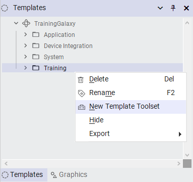
Rename the new toolset to ViewApps. Then expand the TrainingGalaxy \ System toolset to reveal the base system objects, including $ViewApp.
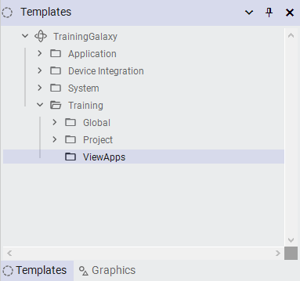
Right-click the $ViewApp object and select New > Derived Template to create a new derived ViewApp template.
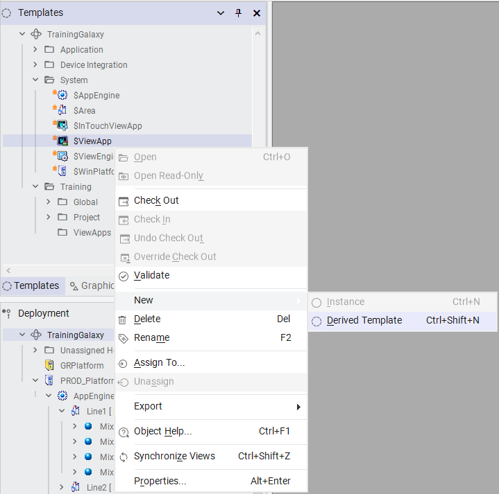
A derived template appears with the default name $ViewApp_001 in the System toolset. Rename it to $ViewApp_Training and move it to the Training > ViewApps toolset. Notice the error icon — it indicates the template has not yet been configured.
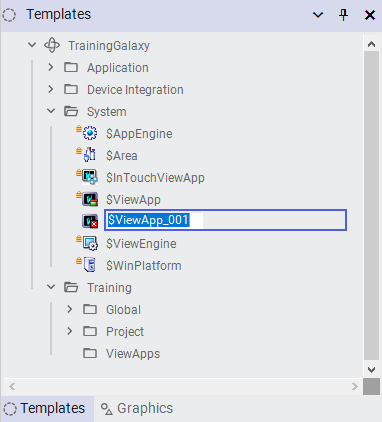
Double-click $ViewApp_Training to open it in the ViewApp Editor. The ViewApp Initialization wizard appears. The first step is to select a screen profile — both the DualScreen and SingleScreen profiles you created previously are listed.
Select the SingleScreen screen profile and click Next.
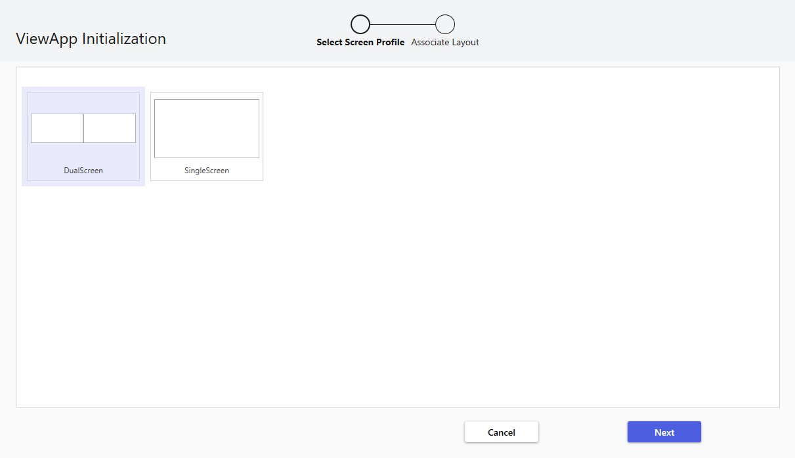
The next step, Associate Layout, appears. The Main layout you created in the previous lab is listed and already selected for the Primary screen. A preview of the screen with the layout appears on the left. Click Finish.
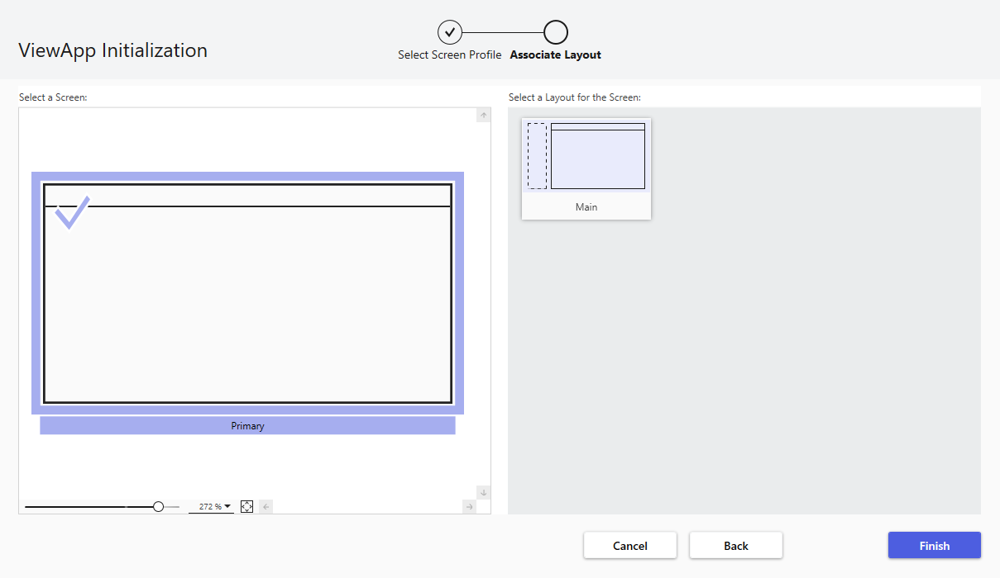
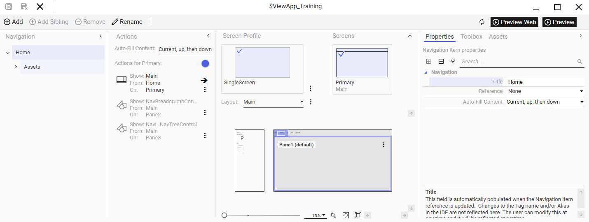
The ViewApp Editor now reflects your selections: the SingleScreen profile is active, the Main layout is displayed, and the Actions panel shows auto-fill content assigned to the layout panes. You can verify the navigation hierarchy and pane content assignments before testing.
In the top-right corner of the ViewApp Editor, click Preview to open a preview session.
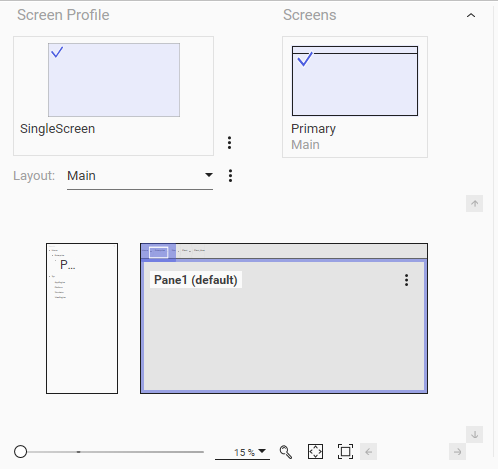
A message appears indicating that preview mode is for testing only and not intended for production use. Check Do not show this message again and click OK.
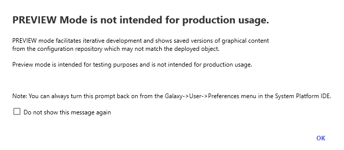
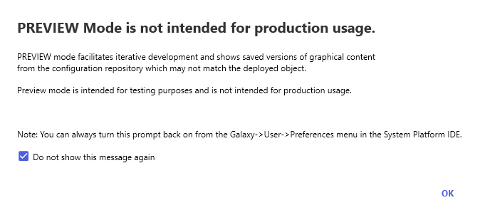
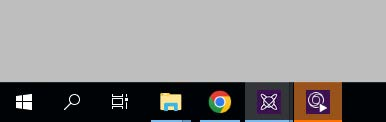
When the preview session opens, Pane2 at the top takes up the entire display area and Pane1 does not show. This is because panes configured for AutoFill are set to Hide When Empty by default, and there is no content to fill Pane1 automatically based on the current navigation. Pane2 is configured with Height Sizing set to Variable by default, so it expands to fill the available space.
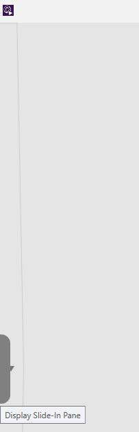
Click the Display Slide-In Pane button on the left side to view Pane3, which contains the NavTreeControl. A search field at the top of the navigation tree allows you to quickly find navigation items. Enter a search string such as mix to find matching items.
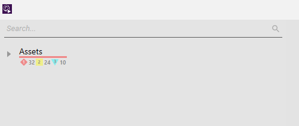
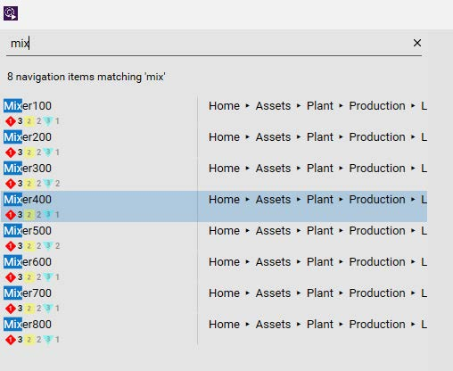
Select a navigation item from the results list. In this example, Mixer100 is selected. The asset tree shows the full hierarchy from Assets through Plant > Production > Line1 > Mixer100, with status indicators at each level.
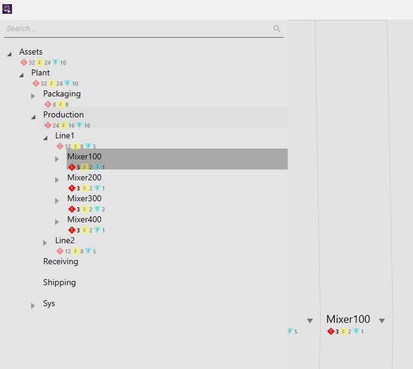
Click off the slide-in pane or press ESC to close it. The NavBreadcrumbControl now shows the path: Assets > Plant > Production > Line1 > Mixer100. Each level has a dropdown arrow and status indicators.
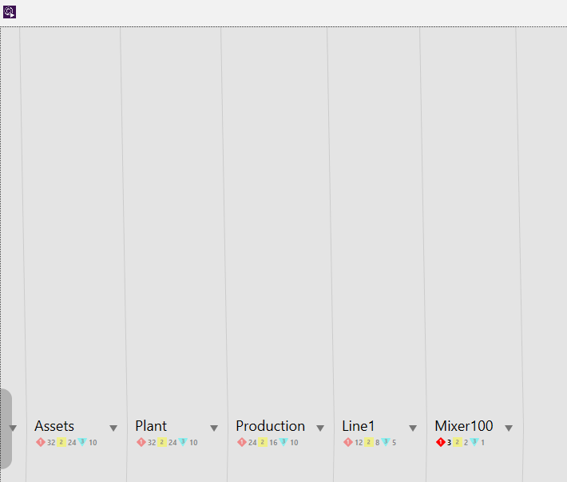
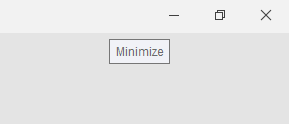
From the ViewApp Editor, you can open the Main layout for editing in the Layout Editor. Click the vertical ellipsis on the right side of the Layout field, which shows the assigned layout is Main, and select Edit Layout.
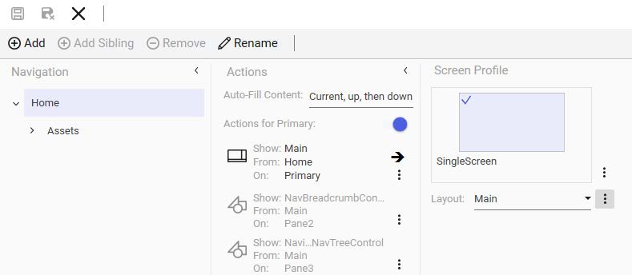
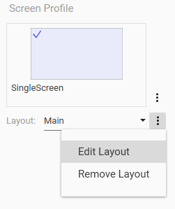
In the Layout Editor, select Pane2, right-click it, and select Pane Properties. On the Properties tab, change the Size > Height Sizing property to Fixed. This prevents Pane2 from expanding to fill the entire display at runtime.
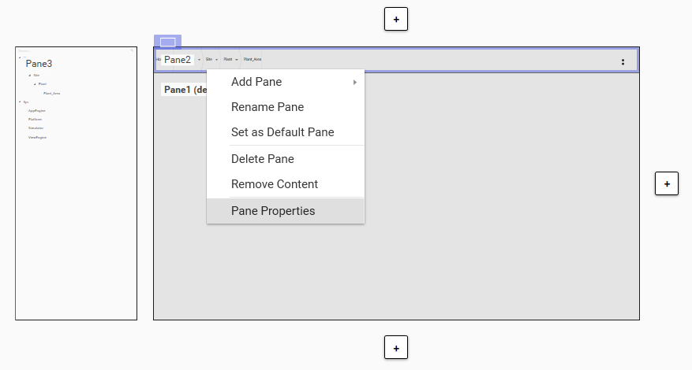

Save and close the Main layout, and check it in. Switch back to the preview session — the changes are reflected immediately. Pane2 with the NavBreadcrumbControl no longer takes up the whole screen.
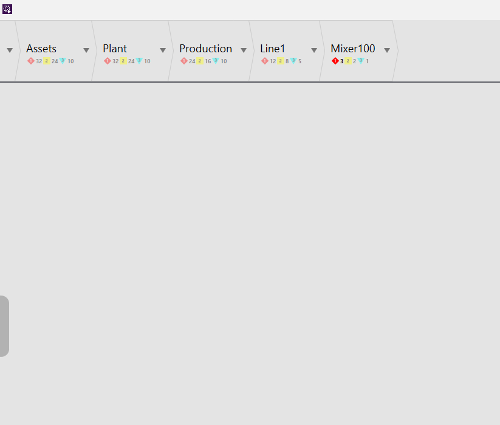
In the top-right of the preview, click Close to close the preview session.

Close the ViewApp Editor and check in the $ViewApp_Training template. Now you will create a ViewApp instance from the derived template. On the Templates tab, right-click $ViewApp_Training and select New > Instance.
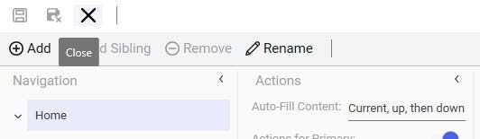
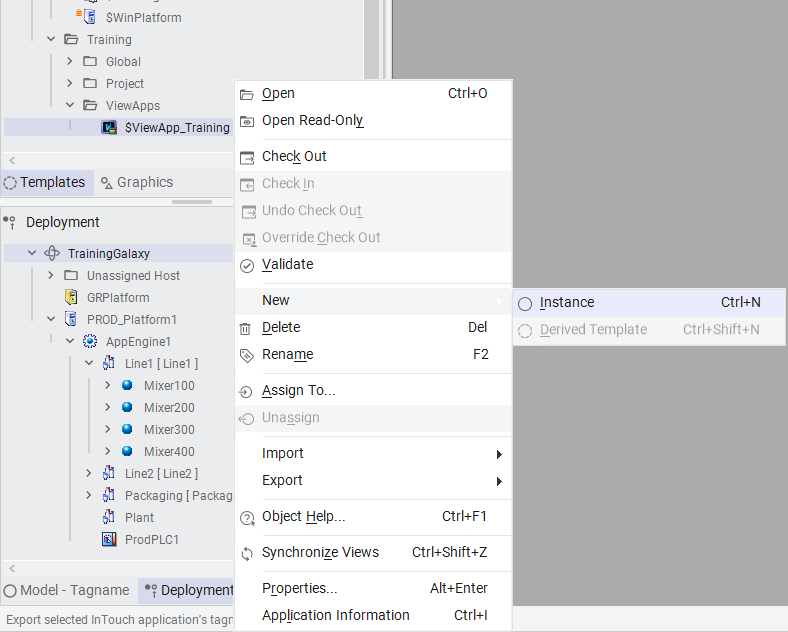
In the Deployment view, a new instance with the default name ViewApp_Training_001 is created under UnAssigned Host. Leave the default name for now.
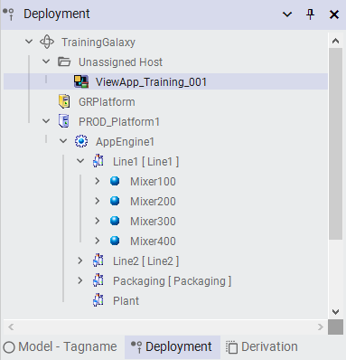
To deploy the ViewApp instance to the runtime environment, it must be hosted by a ViewEngine. Create a derived template from $ViewEngine, rename it to $gViewEngine, and move it to the Training > Global toolset.
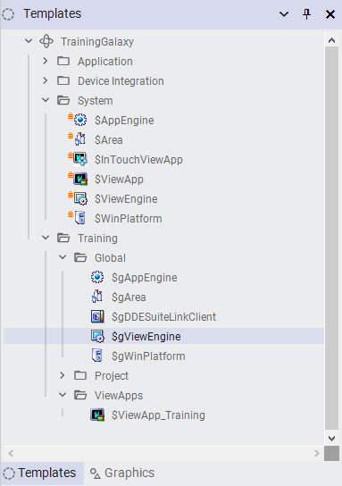
Create a new instance from $gViewEngine and rename the instance to ViewEngine1.
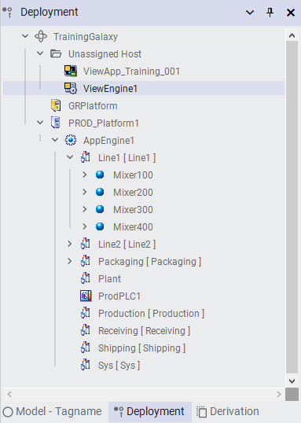
In the Deployment view, assign ViewEngine1 to PROD_Platform1 — the production visualization client node. Then assign ViewApp_Training_001 to ViewEngine1.
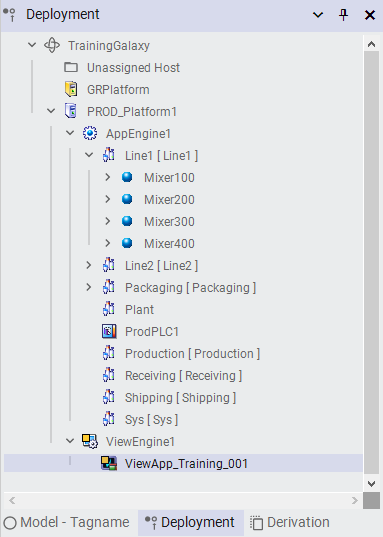
In the Model view, assign both ViewEngine1 and ViewApp_Training_001 to the Sys area.
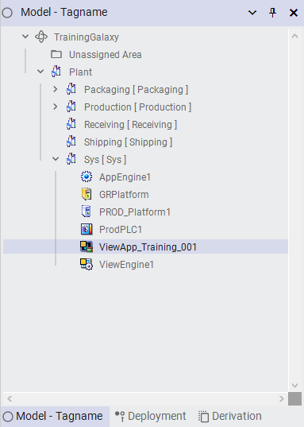
Right-click ViewEngine1 and select Deploy. Leave the default deployment options and click Deploy. Notice the orange synchronization icon on the ViewApp instance while files are being transferred — once complete, the icon changes to the standard ViewApp icon.
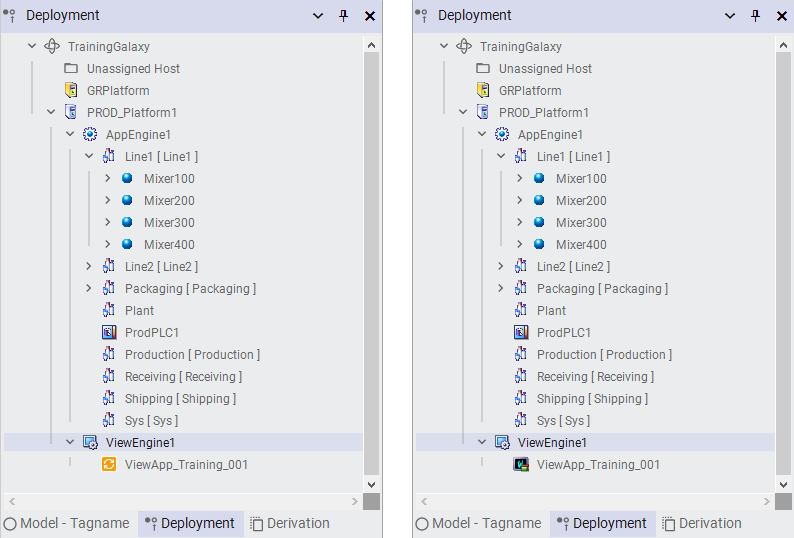
Switch to the production node and open the AVEVA OMI Application Manager. VIEWAPP_TRAINING_001 appears in the list of deployed ViewApps. Click LAUNCH to launch it.

The ViewApp opens maximized to full screen. You can use the NavBreadcrumbControl at the top or the NavTreeControl in the left slide-in pane to navigate through the application.
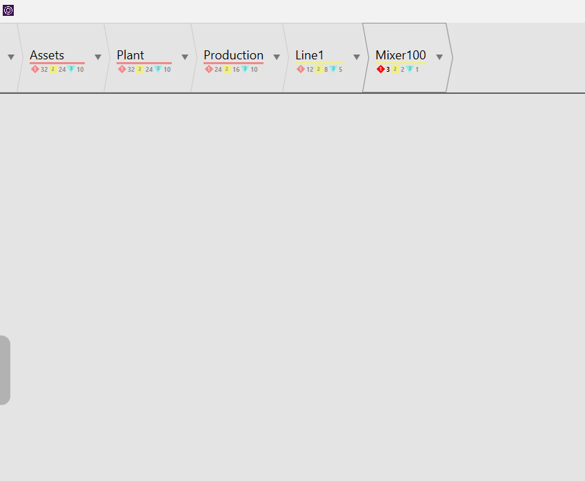
Leave the ViewApp running on the production node and switch back to the engineering node. On the Graphics tab, open the Main layout in the Layout Editor. Select Pane2, right-click it, and select Add Pane > Above to add a new pane named Pane4.
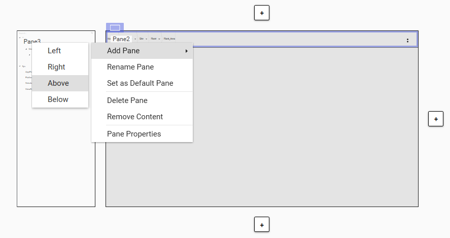
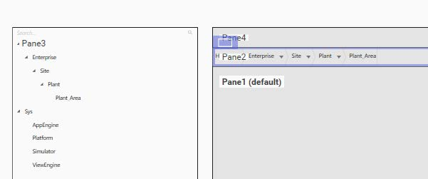
Pane4 inherits the Fixed Height Sizing from Pane2. On the Properties tab, change the Size > Height property to 80.
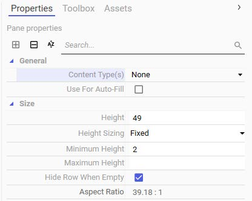
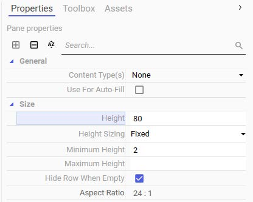
On the Toolbox tab, search for TitleBarControl and drag it to Pane4.
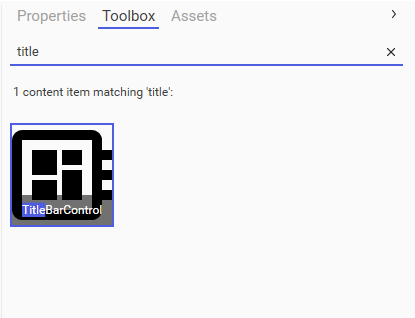
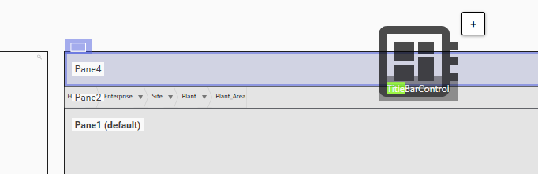
With Pane4 selected, change the Content and Display Area > Title property to AVEVA OMI Training Application. Then click outside the panes to select the layout and display layout properties on the Properties tab.
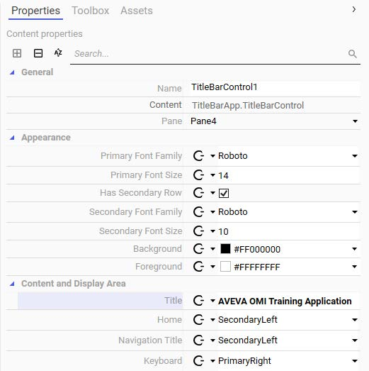
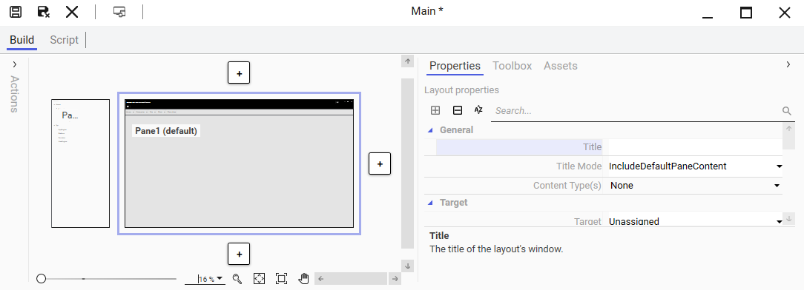
On the Properties tab, uncheck the Behavior > Has Title Bar property. This removes the default window title bar and replaces it with the TitleBarControl you just configured.
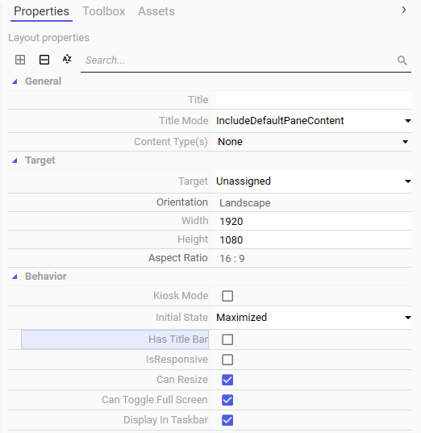

Save and close the Main layout, check it in, and deploy the changes. Switch to the production node — an Open Updated ViewApp message appears. Click OPEN NOW.
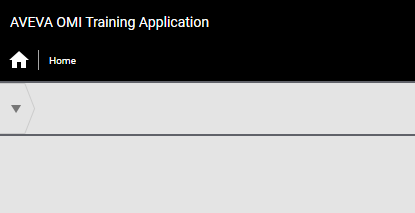
The Initialization wizard appears the first time a derived ViewApp template is opened. It allows you to select a screen profile and associate layouts with the screens in that profile. After clicking Finish, the ViewApp Editor opens with the selected configuration.
Panes configured for AutoFill are set to Hide When Empty by default, and there is no content assigned to automatically fill Pane1 based on the current navigation. Pane2 expands to fill the available space because its Height Sizing is set to Variable by default.
The orange synchronization icon indicates that the ViewApp files are in the process of being transferred to the target node. Once the file transfer is complete, the icon changes to the standard ViewApp icon, indicating deployment is complete.
The ViewEngine is required to host a ViewApp instance in the runtime environment. The ViewApp instance must be assigned to a ViewEngine, which in turn must be assigned to a platform (such as PROD_Platform1) that serves as the production visualization client node.
Add a new pane above the existing panes, set its Height Sizing to Fixed with a Height of 80, drag the TitleBarControl from the Toolbox to this pane, configure the Title property, and uncheck the Behavior > Has Title Bar property on the layout. This removes the default title bar and displays the custom TitleBarControl instead.